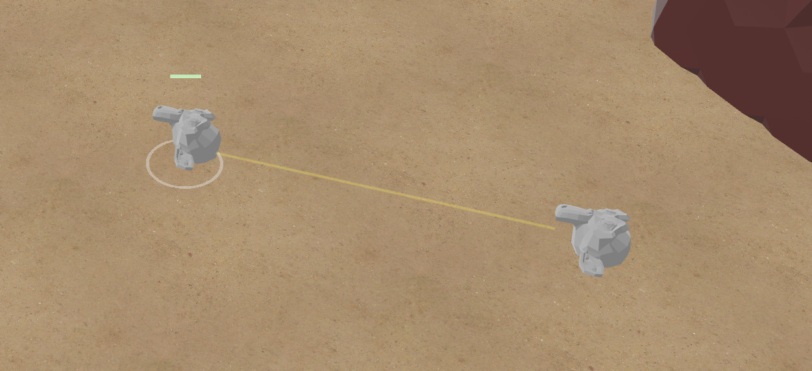
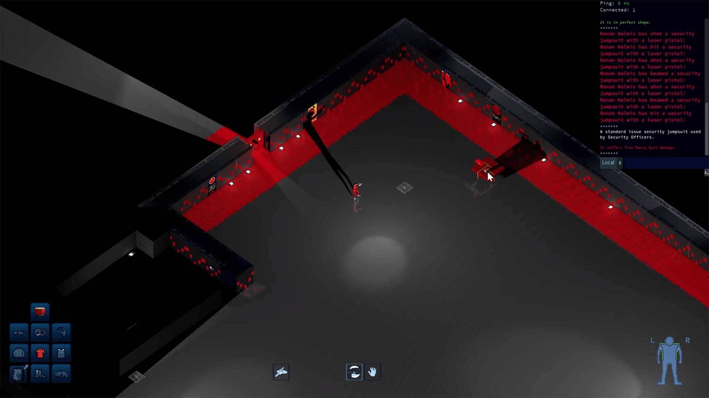

This Month in Rust GameDev #40 - November 2022
Welcome to the 40th issue of the Rust GameDev Workgroup's monthly newsletter. Rust is a systems language pursuing the trifecta: safety, concurrency, and speed. These goals are well-aligned with game development. We hope to build an inviting ecosystem for anyone wishing to use Rust in their development process! Want to get involved? Join the Rust GameDev working group!
You can follow the newsletter creation process by watching the coordination issues. Want something mentioned in the next newsletter? Send us a pull request. Feel free to send PRs about your own projects!
- Announcements
- Game Updates
- Engine Updates
- Learning Material Updates
- Tooling Updates
- Library Updates
- Other News
- Popular Workgroup Issues in Github
- Discussions
- Requests for Contribution
- Jobs
Announcements
Rust GameDev Meetup

The 21st Rust Gamedev Meetup took place in November. You can watch the recording of the meetup here on Youtube.
The meetups take place on the second Saturday of every month via the Rust Gamedev Discord server and are also streamed on Twitch. If you would like to speak at the next meetup, please respond to the monthly GitHub issue that will be created.
Game Updates
Jumpy
Jumpy Items: Swords, Crates, Grenades, & Mines
Jumpy (GitHub, Discord, Twitter) by Spicy Lobster is a pixel-style, tactical 2D shooter with a fishy theme.
In the last month, Jumpy migrated from a client-server networking model to a P2P Rollback model using GGRS. This was to address shortcomings with the server model that had been implemented, and to take advantage of the excellent user experience that rollback networking can offer.
The rollback model did come with the new requirement to run up to 8 simulation frames per 16ms screen refresh, though, and unfortunately the JavaScript bindings used to implement the game items were not performant enough to keep up. For now, scripting has been temporarily disabled.
This sparked a quick migration of the TypeScript files to Rust, and also a discussion about future possibilities for using WASM to get better determinism and rollback performance, along with lower-overhead WASM scripts.
With promising ideas for future improvements, the rest of the month was spent focusing on getting the initial items completed, with Grenades, Swords, Crates, and Mines all landing recently.
With just one more item planned and minimal clean up work, an MVP release is just around the corner!
CyberGate
 The abyss is the deepest, hardest level, filled with monsters of all sizes and strength
The abyss is the deepest, hardest level, filled with monsters of all sizes and strength
CyberGate (YouTube, Discord) by CyberSoul is an ambitious endeavor to create an immersive universe experience with the power of artificial intelligence and procedurally generated gameplay styles. Explore a world filled with strange creatures and thrilling adventures!
The latest updates include:
- A new islands map featuring a safe zone and progressively more challenging levels.
- Collectible Cubic Orbs that provide health, points, and bullets.
- An intuitive interface for day cycle, inventory (bullets), and cooldowns.
- Upgrade your stats as you level up.
- And an Emergency Recall feature for when you’re stranded.
Be among the first to experience the wonders of AI-driven universe with CyberGate! Join the Discord server to participate in the upcoming Phase 7.0!
Rusty Vangers
Rusty Vangers (GitHub, Itch-io) is an experimental re-implementation of the Vangers game, using GPUs and multi-threading in Rust.
The project has started with a strong focus on rendering, since efficient GPU implementation of a Voxel world as large as 2048x16384x256 (that's about 8 giga-voxels!) turned into a tough challenge, even though the original game from 1998 easily does it on CPU.
Finally, after years of experiments, a method has been implemented that is fast and universal when it comes to viewing angles. It's based on an acceleration structure in the form of a voxel octree. This work has landed at the start of November, and now it's possible to ride through the strange worlds while looking from behind the car, or even from inside it.
This method runs on all APIs (including OpenGL!), thanks to wgpu/naga portability. It's suitably fast, regardless of perspective, even on an old macBook with an integrated GPU. It concludes the rendering story of the project, and the devs can shift focus on other areas.
Discussions: /r/rust_gamedev
Digital Extinction
 Laser trail in Digital Extinction
Digital Extinction (GitHub, Discord, Reddit) by @Indy2222 is a 3D real-time strategy game made with Bevy.
Here is the summary of the changes since the last update. It consists of commit range ffd5987..494096b (2022-11-03-2022-11-27). There were 75 non-merge commits in total.
The most notable updates are:
- trails after laser fires are briefly visible,
- flying drones no longer slide on terrain but fly in height,
- simple main menu and map selection were added,
- a game design document was kicked off,
- both Rust API, and other technical documentation are automatically published at docs.de-game.org,
- many community-related improvements have been made,
- the game was migrated to the new Bevy v0.9,
- there were some code quality and performance improvements,
- de_tools crate was fixed.
A more detailed update summary is available here.
Space Frontiers

Space Frontiers (GitHub, Discord, Twitter, Reddit, Steam Group) by Star Wolves is an online sci-fi action community RPG game simulating space (and spaceships) in 3D.
The game has been in-development for over two years. The server and client were successfully prototyped with Godot several years ago. After that, the server, with all its features, was successfully ported to Bevy. The client is now getting the same porting treatment!
The project is commercial, open-source and has a proprietary license. There is a milestone for a license change to free open-source.
Space Frontiers seeks to deliver customized community gameplay experiences. Read more about plugins and content customization in the development journal.
The official StarWolves.io forum and discussion board were launched a week ago. The first 50 registrants will receive a permanent unique forum group/title.
Timely Defuse
Timely Defuse (GitHub) by @E_net4 is a mobile Web game using Bevy, submitted to GitHub Game Off 2022. In this game, explosives are coming out of nowhere and it's the hero's job to stop as many of them from exploding as possible.
Some remarks about the experience of creating Timely Defuse were shared on Dev.to.
Spaceviata

Spaceviata (GitHub) by @FrancoisMockers is a strategy game made with Bevy, submitted to GitHub Game Off 2022.
Starting with one star, your goal in this turn-by-turn game is to conquer the galaxy, fighting against AI players, and balancing exploration with colonization to avoid stretching your resources too thin.
Scummstreets
Scummstreets is a new multiplayer online role-playing game by @dooskington. The game is a fork/sequel to Antorum Isles, so the game server is written in Rust, and the official client is made with Unity. It's still in a pre-alpha state.
There was one dev log published this month:
8bit Duels
 UI preview
UI preview
@ThousandthStar is creating an 8bit themed multiplayer game. It's a turn-based strategy game and is currently under development. This month, the blog got moved from dev.to to ThousandthStar's own blog on Github.
The game is soon getting a UI, and more packets need to be implemented before the game is ready to play. ThousandthStar is excited for the game to be playable, but it will probably take some time, since he is doing it as a side project when he has some time. The game is lacking troop spawns, a turn system, and some more troops! Any and all ideas posted to the r/rust_gamedev thread are greatly appreciated.
If possible, ThousandthStar would like the art to be made up of voxel models instead of just pixel art, but he doesn't know if he'll reach that point yet.
Discussion: r/rust_gamedev
Veloren
Reflections on the river
Veloren is an open world, open-source voxel RPG inspired by Dwarf Fortress and Cube World.
Doors were worked on, and now they open more consistently in a single direction. There is ongoing work to add train tracks to the world, as well as train stations in villages. A talk about Veloren was given at the Rust and Cpp Cardiff Meetup, which you can watch here.
Work was done on minotaurs to improve their attacks. A new dungeon type, adlet, is being worked on. Bird animations are also having some work done. Houses are seeing an uplift with some tests being done. In December, Veloren will be hosting a Christmas event in the second half of the month.
November's full weekly devlogs: "This Week In Veloren...": #197, #198, #199.
Combine&Conquer
Combine&Conquer (Steam) by Martin Buck is a WIP multi-planetary automation game similar to Satisfactory or Factorio. This month's updates include:
- Reworked belts/arms/assemblers,
- modules improvements,
- structure tiers additions,
- color palettes,
- UI and planet visuals improvements.
Also, check out a cool video with the progress of the project over two years of development.
Engine Updates
Pixel Engine
pixel_engine by @Maix0 is a 2D game engine that started as a Rust-version of olcPixelGameEngine (written in C++). It was used as a learning project for Maix0, where he worked on it for over 3 years.
This engine has a very straightforward API and is mostly CPU based (the exception is Decals which are GPU-sprites) but it can achieve some things. Use it as a way to learn new algorithms or to make a simple game.
It uses wgpu underneath so there is support for all desktop targets and WASM (even though there is a bug in the WASM builds where the keyboard layout is only QWERTY).
The most recent addition is the SpriteRef, a way to create a view inside a sprite where it is possible to draw in it. You can have multiple non-overlapping views at the same time.
Fyrox

Fyrox (Discord, Twitter) is a game engine that aims to be easy to use and provide a large set of out-of-the-box features. In November it got a lot of new functionality and improved existing:
- Major animation system rework
- New animation editor
- Reworked animation blending state machine editor
- Major improvements to the curve editor widget
- Curve-based animation system
- Smart placement mode for move gizmo
- Node and property selectors
- Better WebAssembly support - asynchronous scene loading and WASM project template
- Various improvements for project template generator
- Lots of bug fixes
Bevy v0.9

Bevy is a refreshingly simple data-driven game engine built in Rust. It is free and open source forever!
Bevy 0.9 brought many incredible new features. You can check out the full release blog post here, but here are some highlights:
- HDR Post Processing, Tonemapping, and Bloom
- FXAA
- Deband Dithering
- Other Post Processing Improvements
- New Scene Format
- Code Driven Scene Construction
- Improved Entity/Component APIs
- Exclusive System Rework
- Enum Reflection
- Time Shader Globals
- Plugin Settings
- Bevy UI Z-Indices
Discussions: /r/rust, Hacker News, Twitter
godot-rust

godot-rust (GitHub, Discord, Twitter) is a Rust library that provides bindings for the Godot engine. Just this month, a Mastodon account was opened to share development info.
November brings the long-awaited GDExtension binding, enabling access to Godot 4 features from Rust. Still in an early experimental phase, it is already possible to run smaller examples like Godot's famous Dodge-the-Creeps tutorial game.
Compared to the GDNative binding, APIs are a bit simpler now:
- One central
Gd<T>pointer combiningRef/Instanceand their type-states - Self-registering classes:
#[derive(GodotClass)]and you're good-to-go - Less
unsafe, lessunwrap(), more runtime checks
The repository is available at godot-rust/gdextension, while the current development status is tracked in #24. The book as well as documentation are still under construction.
defold-rs
@JustAPotota is working on rusty bindings for the Defold engine and has started a thread about this on Defold's forum where you can fond all more info and updates.
The project is split up into a few different parts:
- defold-rs - Rust bindings to dmSDK and test project for new bindings
- defold-rs-extender - Custom build server
- defold-rs-template - Rust port of the native extension template
It works the same way as regular C/C++ extensions: everything is done on the build server and you only need the standard Defold editor to build games. <...>
These extensions are full Cargo projects. The main benefit being that you can use any of the Rust libraries on crates.io in your Defold game just by listing them in your Cargo.toml. Theoretically, you could even write a game with the Bevy game engine and embed it into a Defold project!
Note that the project is in an early stage: only bundling for Windows and Linux is currently supported, you must host your own build server and it provides no sandboxing or security against malicious extensions.
Learning Material Updates
Render Pipelines in wgpu
@whoisryosuke wrote a blog post on how to parse #GLTF files in Rust, render them using WebGPU, and play animations imported from Blender!
Rapier Physics Engine Showcase
Matthew Bryant released a video with a broad overview of some of the core features and organization of the Rapier physics engine's Bevy plugin.
Evaluating Health & Quality of Crates at Embark

@repi shared some internal guidelines about how they look into and evaluate health & quality of Rust crates at Embark Studios.
note: I wrote this for our internal documentation & guidelines at Embark so not all of it is likely relevant for other companies, but sharing here as others expressed interest in seeing it
these are not exact rules but things to consider, esp. for adding dependencies for long term use in large Rust project in production.
our project is ~500k LoC and uses ~700 crates, so some care and active gardening is in needed. which is why we (read: @ca1ne) also built
cargo-denyandcargo-aboutearly on and use it heavily.
@jntrnr made a video overview of the guide.
Tooling Updates
Boytacean
Boytacean (Github, Working Emulator) by @joamag is a Game Boy emulator written in Rust with both Native (using SDL) and Web (using WebAssembly) frontends that has been created as a learning experiment to better understand both Rust capabilities and Game Boy hardware. The Web frontend is especially interesting making use of Web standards like Gamepad API to provide a rich and joyful experience for both desktop and mobile devices. Performance wise the web version runs smoothly with little to no significant hardware requirements.
Even though Boytacean supports most Game Boy games and passes most well-known test ROMs there are still some features lacking like support for Game Boy Color and APU (sound) support.
You can check this Reddit post for more information.
Graphite

Graphite (website, GitHub, Discord, Twitter) is a free, in-development raster and vector 2D graphics editor based around a Rust-powered node graph compositing engine.
November's sprint 20 introduces:
- Filling in the blanks: The Imaginate tool gains Inpaint/Outpaint, letting users replace content in masked areas and even "uncrop" entire images, powered by Stable Diffusion.
- Going native: Graphite is now available as a desktop app, thanks to Tauri. The app now has access to system resources like rustc and the GPU, which lets it compile and run node graph effects as SPIR-V compute shaders in Vulkan for hardware-accelerated rendering.
- Connecting the dots: The node graph compositor now supports interactive editing, so users can drag nodes and chain together effects. Nodes can be set in the Properties panel or exposed as inputs in the graph.
It's easy to get involved with the project by developing new nodes. Join the project Discord and ask how to begin.
Stay tuned for the imminent Alpha Milestone 2 release and progress converting existing features into nodes.
Open the Graphite editor in your browser to give it a try and share your creations with #MadeWithGraphite on Twitter.
Library Updates
bevy_atmosphere v0.5

bevy_atmosphere (crates.io, docs.rs, GitHub) is now compatible with Bevy 0.9.
The focus of this update was decoupling the atmospheric model from the
compute pipeline. What this means is that users can choose a different model
or create their own using the Atmospheric trait. This sets the groundwork for
having a variety of models to choose from, each for a different type of game.
With the removal of the Atmosphere resource, comes the addition of the
AtmosphereModel resource and the Nishita and Gradient models. Nishita
is the same model that was used in the previous version of bevy_atmosphere.
Gradient is a new model that provides a simple gradient of three colors,
making it ideal for stylized games.
There is also the Atmosphere<T> and AtmosphereMut<T> system params,
which can be used to work with a particular model
without having to cast it from AtmosphereModel.
If you want to read more about the technical changes, check out the developer's blog post!
Discussions: /r/rust_gamedev, /r/bevy, /r/rust
Bevy Sequential Actions
 An entity with a queue of repeating actions.
An entity with a queue of repeating actions.
bevy-sequential-actions (GitHub, docs.rs)
is a simple helper library for the Bevy game engine.
It aims to execute a queue of various actions in a sequential manner.
An action is anything that implements the Action trait,
and can be added to any Entity that contains the ActionsBundle.
In the image above, the following actions have been added:
commands
.actions(entity)
.config(AddConfig {
order: AddOrder::Back,
start: true,
repeat: Repeat::Forever,
})
.add(WaitAction::new(1.0))
.add(MoveAction::new(Vec3::X * 2.0))
.add(WaitAction::new(1.0))
.add(MoveAction::new(Vec3::X * -2.0));
With version 0.6 comes the ability to
add a collection of actions that run in parallel.
This means that all actions will start and stop at the same time,
as the whole collection is treated as "one action".
In other words, the action queue will only advance
when all actions in the collection are finished.
commands
.actions(agent)
.add_many(
ExecutionMode::Parallel,
actions![
action_a,
action_b,
action_c,
]
);
Sparsey v0.10
Sparsey by @LechintanTudor is an Entity Component System focused on flexibility, conciseness and providing features exclusive to its sparse set-based implementation.
The latest release takes advantage of the newly added Generic Associated Types to provide a uniform interface for running systems, functions and closures that borrow data from World and Resources, via the "run", "run_locally" and "run_exclusive" functions.
Example:
let heaviest = sparsey::run(&world, &resources, |weights: Comp<Weight>| {
(&weights)
.iter()
.with_entity()
.max_by_key(|(_entity, &weight)| weight)
.map(|(entity, _weight)| entity)
});
Bevy Quickmenu
bevy_quickmenu (crates.io, docs.rs, GitHub) allows quickly creating nested game menus that can be navigated with keyboard, gamepad or mouse.
Bevy Quickmenu builds on BevyUI and allows defining nested menu structures in a super simple way. Its also very extensible and customisable. If you game needs menus and you would like to support multiple input methods, give it a try.
For example, a simple vertical menu can be defined like this:
fn root_menu(state: &CustomState) -> Menu<Actions, Screens, CustomState> {
Menu::new(
"root",
vec![
MenuItem::image(state.logo.clone()),
MenuItem::headline("Menu"),
MenuItem::action("Start", Actions::Close),
MenuItem::screen("Sound", Screens::Sound)
.with_icon(MenuIcon::Sound),
MenuItem::screen("Controls", Screens::Controls)
.with_icon(MenuIcon::Controls),
],
)
}
For a more involved example, check out this definition of a settings screen
with control device selection and a sound menu.
Version 0.1.5 was just released which simplifies
generics and makes it easier to create dynamic menus.
Discussion: /r/rust_gamedev
Notan v0.8

Notan is a simple abstraction layer that provides cross-platform windowing, input, audio, graphics and other features, in an ergonomic manner without enforcing any structure or pattern and treating WebAssembly as a first-class citizen.
The version v0.8 is one of the biggest releases, adding several improvements in the drawing APIs and fixes and improvements in some other features like the clipboard support.
You can check the demos online and read more about the changes on the changelog.
Bevy Hikari v0.3
Direct lighting, emissive lighting and indirect global illumination under 4x temporal upscaling.
bevy-hikari (crates.io, docs.rs,
GitHub), a path tracing renderer for Bevy, is now compatible
with the 0.9 version of the engine.
In recent updates, the renderer implements light BVH, which allows faster and more accurate multiple emissive sampling. It also features a spatial upscaler based on FSR 1.0 and a temporal upscaler based on SMAA Tu4x, making it more affordable for median end devices.
Bevy Vfx Bag
 A composite effect applied to Bevy's 3D shapes example.
A composite effect applied to Bevy's 3D shapes example.
bevy-vfx-bag (GitHub, docs.rs)
is a visual effects library for the Bevy game engine.
It had its initial 0.1.0 release aligned with Bevy's recent 0.9.0 release. Each effect has a plugin and effects are applied in order:
// Shows an example of adding three post processing effects:
app
.add_plugin(BevyVfxBagPlugin) // Always needed
.add_plugin(RaindropsPlugin) // Shows rain on-screen
.add_plugin(ChromaticAberrationPlugin) // Skews color channels
.add_plugin(LutPlugin) // Allows using a look-up table to remap colors for
// having a specific "feel" to your game
.run();
The camera which receives these effects is marked as such:
commands
.spawn(Camera3dBundle { ... })
.insert(PostProcessingInput) // Marks this camera for post processing usage
Effect settings can be changed at runtime:
fn update(time: Res<Time>, mut ca: ResMut<ChromaticAberration>) {
// Make the red color channel skew in a sinusoidal fashion
ca.magnitude_r = time.elapsed_seconds().sin();
}
The GitHub repository has examples and videos for all effects.
A complete rework of the plugin is underway for version 0.2.0, where the main goal is to align with and use Bevy's render graph features, including the new post processing double buffering feature which arrived in 0.9.0.
seldom_pixel
seldom_pixel (GitHub, Video Demo)
by Seldom is a Bevy plugin for limited color palette pixel art games,
with features for filters, animations, typefaces, particle emitters,
bevy_ecs_tilemap integration, and much more.
In November, seldom_pixel received its 0.1 and 0.1.1 releases for Bevy 0.8.
Its main branch supports Bevy 0.9, but depends on a particular
bevy_ecs_tilemap commit.
Discussions: Twitter
kayak_ui
Kayak UI is a WIP declarative UI that features:
- Easy to use declarative syntax using a custom proc macro.
- Fast and accurate layouts using morphorm.
- Style system built to kind of mimic CSS styles.
- Image and Nine patch rendering.
There's also a book that covers the basic concepts;
Iced v0.5
System76's COSMIC desktop software
Iced is an experimental cross-platform GUI library focused on simplicity and type-safety, inspired by Elm.
This month's v0.5 release features include:
- Stabilization of stateless widgets: the old widget API has been completely
replaced by stateless widgets. Alongside the new API, there are a bunch
of new helper functions and macros for easily describing view logic
(like
row!andcolumn!). - First-class theming: a complete overhaul of the styling primitives, introducing a Theme as a first-class concept of the library.
- Widget operations: an abstraction that can be used to traverse (and operate on) the widget tree of an application in order to query or update some widget state.
- Lazy widget that can call some view logic only when some data has changed.
- The Canvas widget can draw linear gradients now.
- Touch support for Canvas.
- iced_glow now is capable of rendering both the Image and Svg widgets.
Finally, and deserving a special mention, System76 has decided to use iced instead of GTK for Pop!_OS' desktop environment! This is one of the most important adoption events since the inception of the library. The engineers at System76 are already contributing a bunch of great improvements to iced, as well as breaking ground in long-standing issues that could benefit the whole GUI ecosystem in Rust (like proper text rendering!).
Discussions: /r/rust
Other News
- Other game updates:
- A free open beta on Yomi Hustle - an online turn-based fighting game and superpowered fight scene simulator by Ivy Sly - has begun!
- @johann shared a couple of Idu screenshots with dynamic global illumination and a video of stress-testing the framerate with the whole map full of vegetation.
- @crispy_dev posed a video about making a roguelike from scratch in Rust.
- @devildahu posted two gssa-2 about rewriting "Generic Space Shooter Advance" GBA game in Rust.
- @Kane_rogers shared a video of the latest iteration of The Station VR survival game being build with the Hotham engine.
- @Tantan shared video devlogs about improving combat feel and working on a multiplayer networking architecture of his voxel game.
- Other engine updates:
- Anthony Utt has recently converted the WIP Alkahest engine from C++ to Rust and released a vlog about it and its UI render specifically.
- @markusmoenig has published the first public pre-release build of Eldiron - a cross-platform RPG engine that draws heavily on the earlier Ultima games for inspiration.
- Other tooling updates:
- @Setzer22 shared a couple of posts with feature previews for the next Blackjack release: copy&paste, an examples folder with annotated graphs, gizmos, and face selection.
- @eurigilberto shared a video of a cool little VR terrain generation app made using Rust and WebGL.
- Other library updates:
- Taffy UI v0.2 brings improved flexbox and significant performance improvements
- kopi by @hasenbanck is a small abstraction to easily and safely embed an ECMAScript runtime inside a Rust based application.
- dynec by @SOF3 is a statically archetyped opinionated ECS-like framework.
- guiedit by @aleokdev is a WIP library for easily adding a developer GUI to any graphical application.
- bevy_tweening v0.6 features Bevy v0.9 support, new Duration-based elapsed API, better looping control with RepeatCount/RepeatStrategy, and fixed change detection
- dungeon-generator by @MoutonSanglant is a naive dungeon generator for rogue-like games, mostly done for education purposes.
- leafwing_input_playback by @alice-i-cecile is an input recording and playback library for the Bevy game engine.
Popular Workgroup Issues in Github
Discussions
- /r/rust_gamedev:
Requests for Contribution
- 'Are We Game Yet?' wants to know about projects/games/resources that aren't listed yet.
- Graphite is looking for contributors to help build the new node graph and 2D rendering systems.
- winit's "difficulty: easy" issues.
- Backroll-rs, a new networking library.
- Embark's open issues (embark.rs).
- wgpu's "help wanted" issues.
- luminance's "low hanging fruit" issues.
- ggez's "good first issue" issues.
- Veloren's "beginner" issues.
- A/B Street's "good first issue" issues.
- Mun's "good first issue" issues.
- SIMple Mechanic's good first issues.
- Bevy's "good first issue" issues.
Jobs
-
DIMS (Stockholm, Sweden) is building a Rust game engine and creation platform dedicated to creating large multiplayer open-world games and has a lot of open positions, including Game Engine Programmer:
Come build a game engine and creation platform from scratch in Rust! It’s got everything: game-like collaborative building, networking by default, procedural worldbuilding, WebAssembly for scripting, WebGPU for graphics, and community-driven co-creation.
You can find all of the details in their job offer page.
-
Ultimate Games (London, UK) is looking for Mid-to-Senior level Rust Graphics engineer.
That's all news for today, thanks for reading!
Want something mentioned in the next newsletter? Send us a pull request.
Also, subscribe to @rust_gamedev on Twitter or /r/rust_gamedev subreddit if you want to receive fresh news!
Discuss this post on: /r/rust_gamedev, Mastodon, Twitter, Discord.